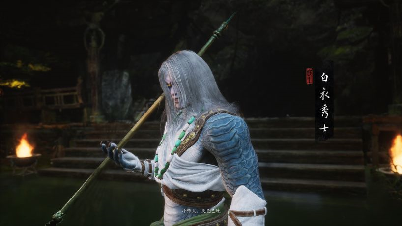
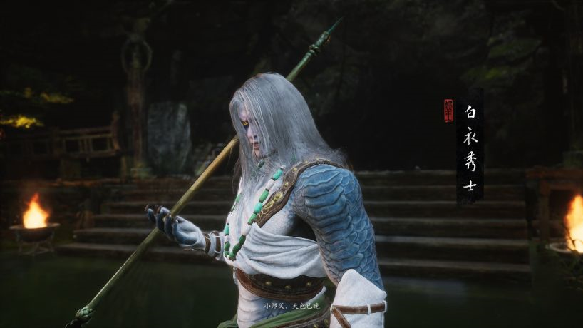

白衣秀士
 

翩翩恰少年，白衣配怒颜。
吟诗折扇骨，嗔怒出枪尖。
| 名称 | 白衣秀士 |
| 分类 | 人物 |
| 地点 | 黑风山 |
春日，风和，白雾泽。一老狼架炉烹茶，看着水中白影喃喃："你我本不该在此。"
白衣秀士正自舞着一段枪法，闻及此言，倏地将枪掷到炉旁，将身一闪，已握住枪柄，立在老狼身前。
概述
"饮血，还是喝茶？"
"喝茶。坐。"
二人对坐，老狼将一碗茶汤递与秀士。
秀士一饮而尽："好茶。"
老狼颔首，问："一个烧过的山场，可值许多把戏？"
秀士答："我奉大哥之命来此，绝无把戏。"
老狼反问："那我起死回生，难道不是把戏？"
秀士不语，老狼盯着秀士亦不语，他双目虽浑浊，却难掩焦急之情。
秀士思量片时，终是答道："这个还真不是把戏。"
"若非把戏，何解？"
"你可听过天上那童子，佛祖菩萨有个术法，拼凑外物，念动起死回生真言，遂救得性命。"
老狼苦笑摇头："大王绝无这等本事。"
"他没有，他得来的邪物有。"
老狼心急道："可我如此苟活，寝食难安。"
"必死则生，幸生则死，一息尚存，也算超然……"
老狼不语，秀士垂眼亦不语，他双目虽异瞳，却难掩怜悯之色。
老狼道："这茶留于你了。还是喝茶好。"
老狼拂袖起身，喟然而叹："饮他们的血，我于心何忍呐……"
他蹒跚离去，并非来时之路，只向水泽一侧的岔路拐过。
"叫大王，不用再来看我了。"
背景
白衣秀士是一位神秘的角色，外表是一位风度翩翩的文士，擅长使枪，真实身份是一条白花蛇怪。他自称奉"大哥"之命而来，在后山要道担任内应。
在游戏中初次相遇时，白衣秀士正在一处幽静之地修身养性，与一位老狼对饮清茶。他的言行举止颇有文人风骨，却也暗藏杀机。
白衣秀士与一位神秘的"大哥"有所关联，在黑风山一带活动。他似乎对观音禅院的往事知之甚详，对长老的冤魂也颇为关注。
他时常提到"三口钟"的事情，这些钟声似乎与某些重要的秘密有关。白衣秀士的真实目的和立场都笼罩在迷雾之中，但他的一言一行都暗示着更深层的故事。
台词
开场台词
凤兮凤兮，何德之哀，往者不可谏，来者犹可追。
小师父，天色已晚
你来我这修身之地大开杀戒
到底是何居心啊？
战斗中
善若不失，恶则不长，小生劝你在思量思量
逆天者亡！
一张一驰！
区区鼠辈！
福祸无门，唯人所召，你还不明白吗？
二阶段
如此苦苦相逼
便怪不得小生现出本相！
战败台词
朽木不可雕也。
空有匹夫之勇，定非大哥说的那个人。
战胜
且慢！
是大哥要我来此做个内应，这才假意听命于那熊罴守这后山要道
知君命不偶，同病亦同忧
观音禅院是烧没了，可那长老的冤魂没有散
贪根不拔，苦树常在
你真正想要的东西，忘了最好
那三口钟……你可都见过了？
旁人念念不忘的，也是你所求的吗……
成就
以下是与白衣秀士有关的成就：
- 【长蛇隐迹第六难】秀士诉了隐情，且先饶他一命。
- 【余韵远传第八难】三钟响，幽魂藏。
- 【禅院逢友第九难】长老终于等到了东土的老爷。
- 【折梅见赠六十一难】一意逆流冷乡心，孰能轻易忘旧情？
基本信息
| 名称 | 白衣秀士 |
| 分类 | 人物 |
| 地点 | 黑风山 |